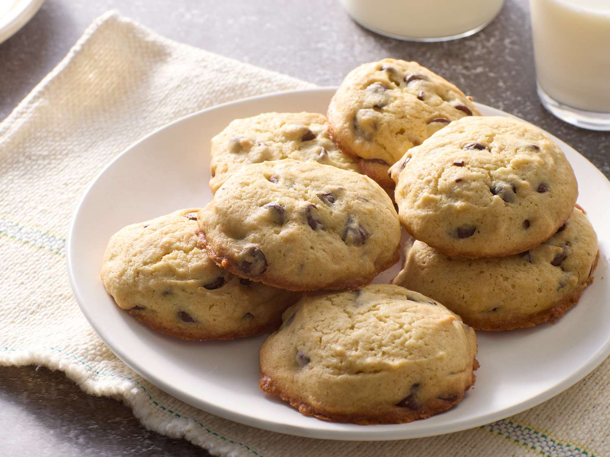

Banana Chocolate Chip Cookies

Introduction
Fun fact: growing up, I was the designated desserts-maker in the family. So I guess you could say, I perfected the art of making cookies. My family's all-time favorite are banana chocolate-chip cookies. I can make a batch of 24 and they'll be gone halfway through the week. I didn't think they were THAT great until I went on my mission in Brazil.
Apparently, homemade cookies are a luxury. Brazilians will go crazy for chcolocate-chip cookies. And when you put banana in them, well they'll go insane and eat all of it. Pretty soon, I was known as the missionary who bakes cookies. I enjoy making people happy with food and desserts so here's my recipe!
Ingredients
- 1⁄2 cup (1 stick) of unsalted, room temperature butter
- 1⁄2 cup white sugar
- 1⁄2 cup brown sugar
- 1 egg
- 1 tsp vanilla extract
- 2-3 overripe bananas – if stronger banana flavor is desired and bananas are small, 3 bananas are preferable
- 1 tsp baking soda
- 1 cup of whole wheat flour
- 1 cup of unbleached white flour
- 1⁄4 tsp of salt
- 1 cup of semi-sweet chocolate chips
- Optional Toppings & Spices:
- 1 cup of oats
- 1⁄2 tsp of cinnamon
- 1⁄2 tsp of ground cloves
- 1 cup of nuts of choice
Steps
- Preheat the oven to 350 degrees fahrennheit.
- Place the butter and sugar in a large bowl and whisk together. The mixture should reach an airy, fluffy, and soft texture as seen below.
- Warning: If the butter is not at room temperature, it will not reach the desired consistency. Melted butter will result in a runny batter and expanded cookies.
- Add the egg and vanilla to the butter and sugar mixture. Mix until the egg and vanilla are incorporated. Mixture should remain the same texture as before.
- Peel your bananas and discard the peels.
- In a small bowl, mash your peeled bananas. Beat until mixture reaches almost a liquid consistency and no big chunks are visible.
- Mix the baking soda in at this time and let the mixture sit for about 2 minutes. Enough time should be given for the acid of the bananas to react with the baking soda. This reaction allows cookies to rise when baking.
- Place the banana mixture into the large bowl containing the butter, sugar, vanilla, and eggs.
- In a medium bowl combine the flour and salt. Optional: Add the oats and spices, then mix.
- Place the banana and sugar mixture into the medium bowl containing the dry ingredients and mix until thoroughly combined.
- Add the chocolate chips (and nuts if desired) into the bowl and mix, keeping the same consistent texture. If unsure about your cookie dough texture, watch the following video.
- Scoop heaping tablespoons of cookie dough and place onto non-stick baking sheets. Keep cookies approximately 2-3 inches apart as the cookies will expand when baking. It should make approximately 40 cookies.
- Note: If non-stick baking pans are not available, regular baking pans are fine. Please make sure to apply a light amount of oil or butter onto pans before placing cookie dough.
- Bake for approximately 10-15 minutes checking periodically.
- Note: Older ovens may need 15-18 minutes to bake.
- Caution: Once reaching the 10 minute mark, check to see if cookies are baked by using the tip below. Continue checking up on the cookies every 1-2 minutes until fully baked.
- Tip: To measure cookies’ baking status, insert a toothpick into a chocolate chip free area. If the toothpick comes out dry then the cookies are fully baked.
- Once cookies are golden brown and bottom edges are noticeably darker (see picture below), carefully remove the pans from the oven using oven mitts, and let the cookies cool.
For fun, check out the following visualization comparing different recipes from different websites.